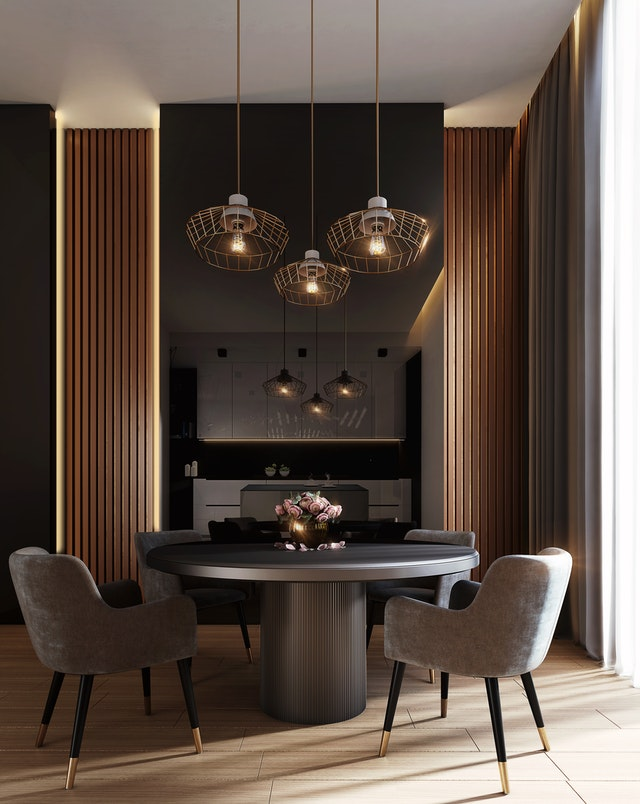

About Us

Orton Architects is a Pretoria-based design practice founded
on the ideas that buildings can build a bridge between culture,
nature and people, and that inspiring buildings can have a
positive effect on people’s lives.
We also value every engineer, contractor and craftsman who forms
an intricate part of the success of our projects. Their knowledge
of construction and system performance is integral to any design
and leads to sustainable and practical buildings.
Another important team member is the client of course. We have had
the opportunity to work with amazing individuals and families who
not only supported, but also inspired and challenged us. Through
their dreams we are given the opportunity to realize our own.
The firm began its creative existence in 2010 with the architect
Jacques Orton, who strongly believes that buildings can serve as
a bridge between culture, nature, history and people, and that
inspiring surroundings have a positive effect on people’s lives.
We believe that architecture should be rooted to its particular
place by using the best local materials and craftsmen. Our vision
is to create buildings that are environmentally responsive,
authentic, artful, tactile and modern.
While we are very proud of the buildings we design, we derive a
great sense of accomplishment from our “family” of talented
individuals we have assembled around us.
Among the firm’s accolades is the 2010 Innovative Learning through ETDs Award.
‘His plans to revitalize an aging urban centre in the outskirts of Pretoria are now the talk of scholars and urban planners who are advocating for legislative policy change. His vision presents the tremendous potential to turn-around the poverty ravaged areas of his home town and transform this region through micro-economic development and provide a model for others around the world including developers in far-away Detroit, Michigan and many other gentrified urban centres’.
Articles on the firm’s work include: TUIS magazine (Feb 2015) , SA Home Owner (Aug 2016), SA Home Owner (Sept 2018).
Top Billing publication (22 May 2018).
Often, architecture becomes the vessel that supports specific art installations. In many of its projects, the firm works with artists & craftspeople to fabricate specific elements that support the overall design. Buildings are collaborative efforts that involve not just the architect, but the contractor and the workers as well. Craft is an outgrowth of Orton Architects contextual approach to design, as working with these artists helps our work tell an authentic story of its place.
© 2021 · Arki-Q. All rights reserved.